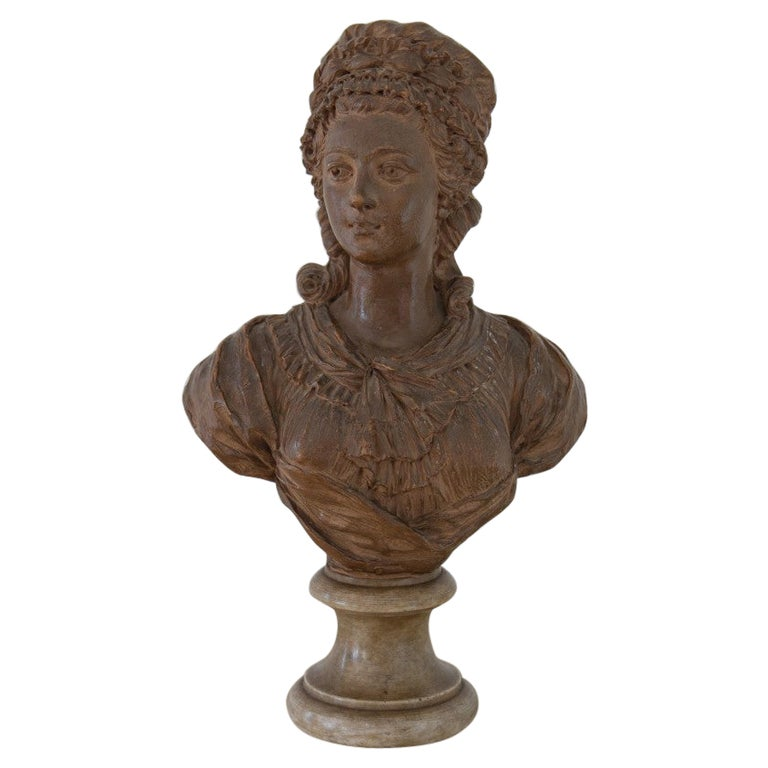

Busto di giovane donna
Ambito fiorentino, ultimo quarto del XV secolo
Ritratto a mezzo busto con acconciatura a trecce raccolte; lacune alla base e sul naso.
- Identificativo
- OGG-0005
- Tipologia
- Scultura
- Autore o ambito
- Ambito fiorentino
- Datazione
- Ultimo quarto del XV secolo
- Luogo
- Firenze
- Materia e tecnica
- Terracotta con tracce di policromia
- Misure
- cm 48 × 44 × 22
- Stato di conservazione
- Mediocre
- Licenza
- CC BY 4.0